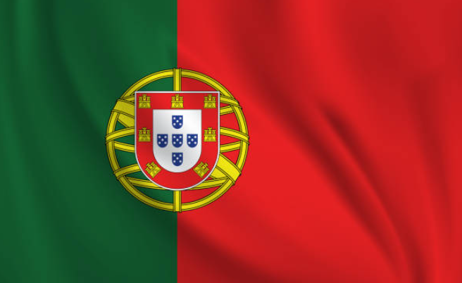

{kind=link}
{kind=link}
{kind=link}
{kind=link}
{kind=link}
{kind=link}
Le tirage au sort de la Coupe du Monde 2030 dévoilé
Découvrez les groupes et les confrontations de la phase de poules...

Suivez toute l'actualité de la Coupe du Monde 2030, les équipes participantes, le calendrier des matchs et plus encore.
Vivez l’excitation de la Coupe du Monde 2030 !
Le plus grand événement du football mondial revient avec une édition exceptionnelle organisée par l’Espagne, le Portugal et le Maroc. Cette Coupe du Monde promet des moments inoubliables, des matchs intenses et une compétition féroce entre les meilleures équipes du monde.
Un tournoi historique
Pour célébrer les 100 ans de la Coupe du Monde, trois matchs inauguraux auront lieu en Uruguay, en Argentine et au Paraguay, rendant hommage aux pionniers du football mondial. Ensuite, les stades emblématiques d’Espagne, du Portugal et du Maroc accueilleront les rencontres jusqu’à la grande finale tant attendue.
Ce qui vous attend :
Découvrez les groupes et les confrontations de la phase de poules...
Un aperçu des infrastructures qui accueilleront les matchs...
MAROC:
Stade Mohammed V (Casablanca) : Le plus grand stade du Maroc, avec une capacité d'environ 67 000 spectateurs.
Prince Moulay Abdellah (Rabat) : Un autre grand stade situé à Rabat, capable d’accueillir environ 53 000 personnes.
de Tanger (Tanger) : Ce stade moderne a une capacité de 45 000 places et est souvent utilisé pour les grandes compétitions nationales et internationales.
Stade de Marrakech (Marrakech) : autre stade avec une capacité d’environ 45 000 places.
Stade de Fès (Fès) : Ce stade a une capacité d'environ 45 000 spectateurs.
Espagne :
Stade Santiago Bernabéu (Madrid) : Le stade légendaire du Real Madrid, avec une capacité de 81 000 places.
Camp Nou (Barcelone) : Le plus grand stade d'Espagne et d'Europe, avec une capacité d'environ 99 000 spectateurs.
Stade Wanda Metropolitano (Madrid) : stade de l'Atlético Madrid, avec une capacité d’environ 68 000 places.
Stade de La Cartuja (Séville) : Avec une capacité d'environ 60 000, il a accueilli plusieurs événements internationaux.
Stade Mestalla (Valence) : stade historique avec une capacité d’environ 55 000 places.
Portugal :

Stade de la Luz (Lisbonne) : Le stade du Benfica, avec une capacité de 65 000 spectateurs.
Stade du Dragão (Porto) : stade du FC Porto, avec une capacité d’environ 50 000 places.
Estadio José Alvalade (Lisbonne) : stade du Sporting CP, avec une capacité de 50 000 places.
Estadio Bessa (Porto) : Ce stade peut accueillir environ 30 000 personnes et est un autre lieu proposé pour la Coupe du Monde.
Stade de Braga (Braga) : stade impressionnant a une capacité d’environ 30 000 places.